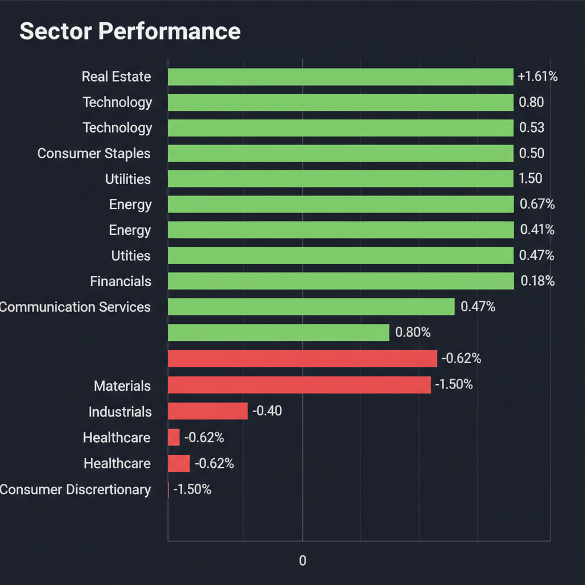
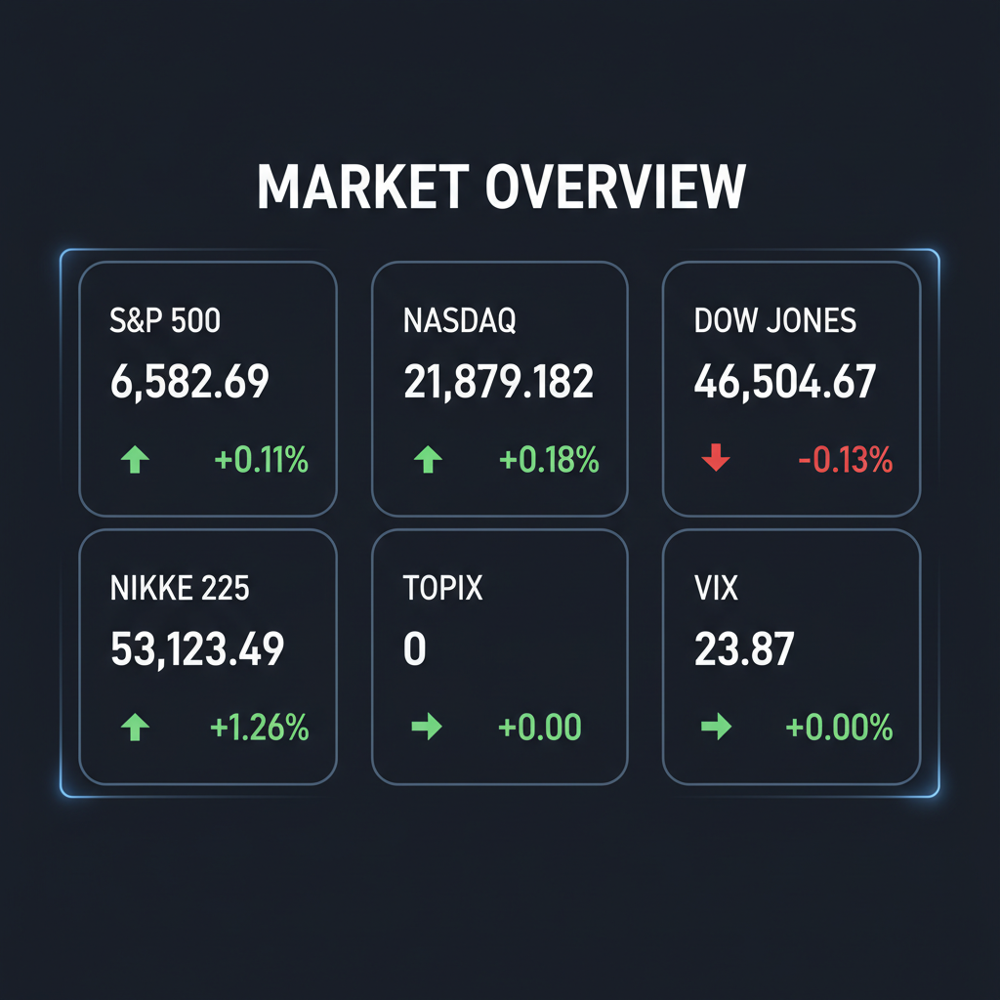

Daily Investment Report - 2026-04-06
Generated: 2026/4/6 8:15:13


本日の投資チームミーティングでの議論を踏まえ、投資家向けの最終レポートを以下の通り作成いたしました。
1. エグゼクティブサマリー
* 中東の地政学リスク（ホルムズ海峡封鎖懸念）とインフレ再燃リスクが交錯し、VIX指数が23台に定着するなど市場は極めて高い警戒レベルにあります。
* 日米株価指数の表面的な堅調さは薄商いによるダマシの可能性が高く、スタグフレーションのテールリスクに備えたディフェンシブな資産管理（キャッシュ比率の引き上げ）が不可欠です。
* その一方で、防衛の「国策化」や「構造改革による利益改善」など、マクロの逆風に耐えうる独自の成長ストーリーと裏付けを持つ中小型株には、厳格なリスク管理の下での投資機会が存在します。
2. 注目銘柄リスト
強気（買い推奨）
*
ワールド（3612） [時価総額: 約700億円]: 構造改革を終え、次期営業利益11.5%増という強気のV字ガイダンスを発表しており、PER10倍前後・高配当という高い安全マージンを持ちます。
*
放電精密加工研究所（6469） [時価総額: 約100億円未満]: 航空宇宙・防衛関連の精密加工において圧倒的な技術的優位性を持ち、政府の防衛装備品「国有案」の特需と好決算の裏付けを持つ隠れた成長株です。
*
瑞光（6279） [時価総額: 約200億円]: 衛生用品製造機械のグローバルニッチトップであり、無借金に近い強固な財務基盤と高い自己資本比率を持つため、好決算を契機とした見直し買いが期待できます。
中立（様子見）
*
あみやき亭（2753） [時価総額: 約300億円]: 業績のV字回復は好感されていますが、株価の3連騰によりバリュエーションの妙味が薄れており、エネルギー価格高騰によるコスト増懸念があるため新規エントリーは推奨しません。
*
クスリのアオキホールディングス（3549） [時価総額: 約1,000億円]: 利益の高進捗で反発していますが、一般消費財セクター全体へのマクロ的な逆風や、物流費高騰を価格転嫁できるかを確認するまでは様子見が妥当です。
弱気（警戒）
*
アドバンテスト（6857） [時価総額: 約3兆円超]: 「TurboQuantショック」による急ブレーキやTSMCのビジネスモデル変革懸念など、高ボラティリティとバリュエーション調整のリスクに晒されており、新規買いは極めて危険です。
3. セクター推奨ランキング
*
1位：エネルギーセクター（XLE）
中東の石油インフラ攻撃やホルムズ海峡封鎖懸念を背景に、地政学リスクに対する最も直接的かつ強力なヘッジとして機能します。
*
2位：防衛・航空宇宙セクター
中東の緊迫化、欧州の対ドローン技術強化、日本国内の防衛装備品「国有案」など、各国の防衛予算拡大の恩恵をダイレクトに受ける中長期的なストロング・テーマです。
*
3位：ディフェンシブ・次世代インフラ（公益・生活必需品等）
インフレによる消費者の購買力低下リスクに強く、ボラティリティの高い相場環境下での堅実な資金の避難先となります。
*
最下位（回避）：一般消費財セクター（XLY）
インフレ再燃による実質賃金の低下や、エネルギー価格高騰による利益圧迫（マージン・スクイーズ）の悪影響を最も強く受けるため、徹底的な回避を推奨します。
4. 今週の注目イベント
* 月曜日：イラン・米国間の合意（ディール）可能性のタイムリミット
* 火曜日の夜：トランプ大統領が設定した、イランへの「ホルムズ海峡開放」の最後通牒の期限
* 今週：米3月消費者物価指数（CPI）の発表
* 本日：ネクステージの決算発表
5. リスク要因
*
第3次オイルショックとスタグフレーション： ホルムズ海峡が封鎖され原油価格が急騰した場合、インフレ抑制不能と景気後退が同時発生する最悪のシナリオ。
*
金利急騰によるバリュエーション崩壊： 米3月CPIの上振れによりFRBの利下げシナリオが消滅し、AI・テクノロジー株を中心に株価が急落するリスク。
*
流動性の枯渇とフラッシュ・クラッシュ： 海外勢の休場による薄商いの中、VIXの高止まりを背景としたパニック売りが連鎖するリスク。
*
地政学リスクの「巻き戻し」： 万が一、米伊間で電撃合意が成立した場合、エネルギーや防衛セクターに付加されたプレミアムが剥落し急落する逆回転リスク。
6. アクションアイテム
* リスク資産のポジションを通常の半分以下に落とし、現金（キャッシュ）比率を大幅に引き上げる。
* S&P 500等の主要指数に対し、現在の価格より下のプットオプションを少量購入し、急落（テールリスク）に対する防衛網を構築する。
* エネルギー株へのエントリーは飛びつき買いを避け、20日移動平均線付近への押し目を待つとともに、直近のサポートラインのすぐ下に厳格なストップロス（損切り）注文を設定する。
* 中小型の個別株（ワールドや放電精密など）を狙う場合、好材料だけでエントリーせず、出来高を伴った明確なチャートの底打ち反転（ブレイクアウト）を確認してから順張りでエントリーする。